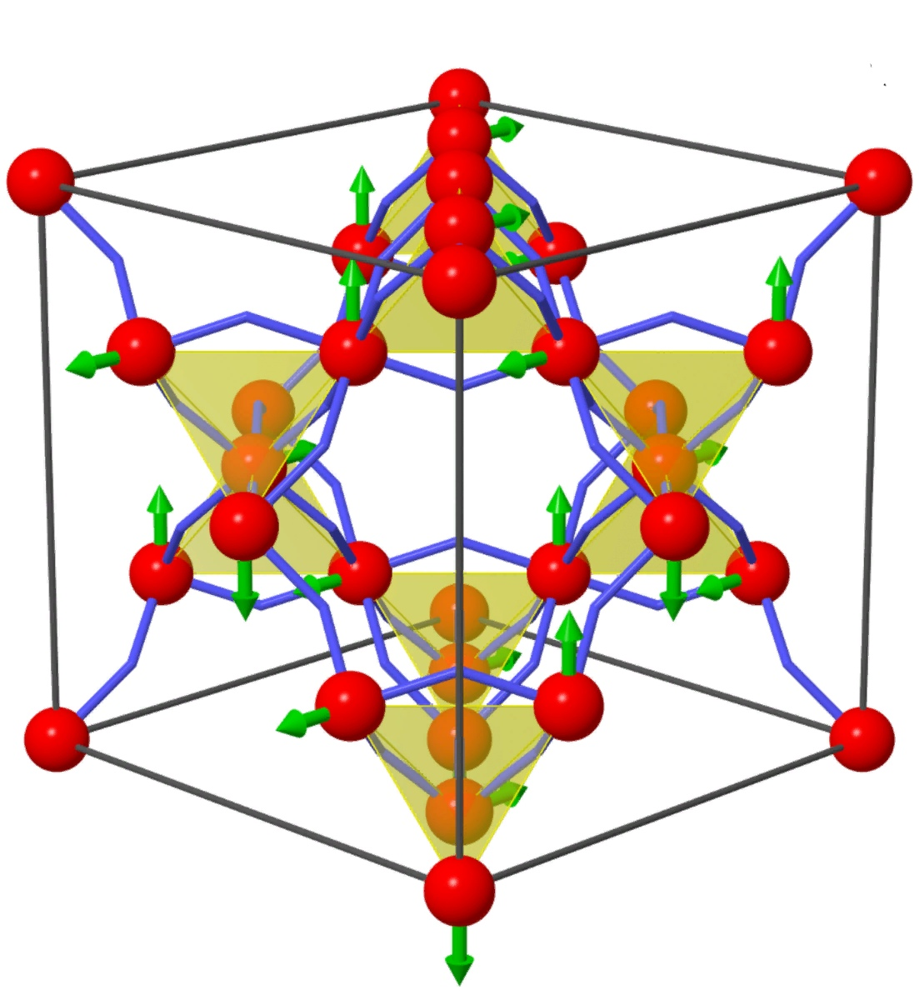

Фи́зика конденси́рованного состояния — большая ветвь физики, изучающая поведение сложных систем (то есть систем с большим числом степеней свободы) с сильной связью.
Конденсированные среды с самыми разнообразными характеристиками встречаются абсолютно везде: кристаллы, обычные жидкости и аморфные тела, материалы с внутренней сложной структурой (к которым возможно отнести и мягкие конденсированные элементы), квантовые жидкости, спиновые постоянные цепочки, магнитные моменты, сложные пространства и так далее.
Тепло и другие характеристики физических тел основаны на исследованиях физики конденсированных сред, которые непосредственно обеспечивает базу для многих отраслей высокой науки и нанотехнологии как таковой. На сегодняшний день реализация принципов данного научного направления находится на подъеме с разработками микроэлектроники, лазерной техники и оптических коммуникационных технологий.
В физике конденсированных сред все элементы делятся на атомы с целью детализированного изучения различных структур. Эта область физики начала набирать популярность только в последние десятилетия. Необходимо отметить значимость явления, которое происходит от изучения кристаллического твердотельного вещества во время его трансформации в жидкое состояние. В этих двух долгосрочных экспериментах исследователям удалось построить некоторую уверенность, и постепенно ввести некоторые действующий способы для содействия дальнейшим научным исследованиям.

Физика конденсированных сред на данный момент находится в самом ярком периоде собственного расцвета. И, поскольку фундаментальные исследования в указанной области науки и практического использования технологии зачастую тесно взаимосвязаны между собой, результаты экспериментов представляет собой серию новых универсальных технологий, материалов и устройств, что в современном мире высоких технологий играет незаменимую ключевую роль.